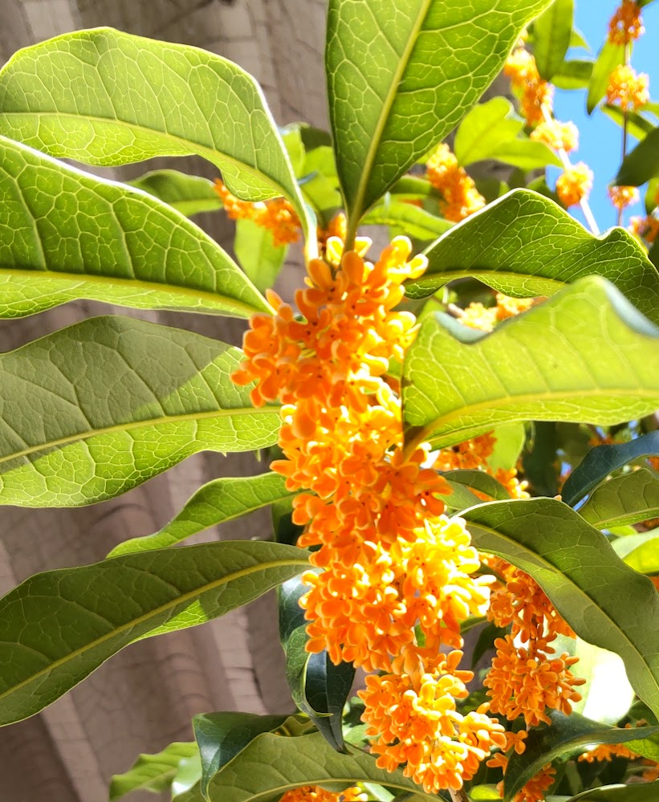
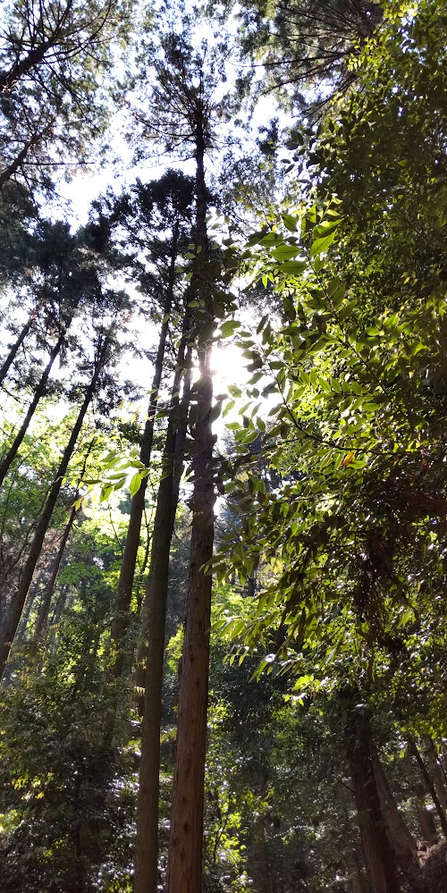
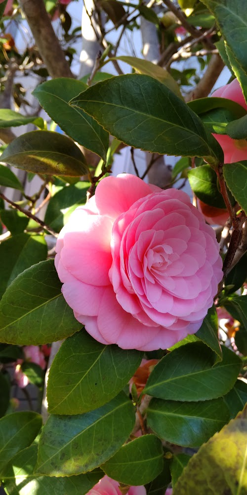
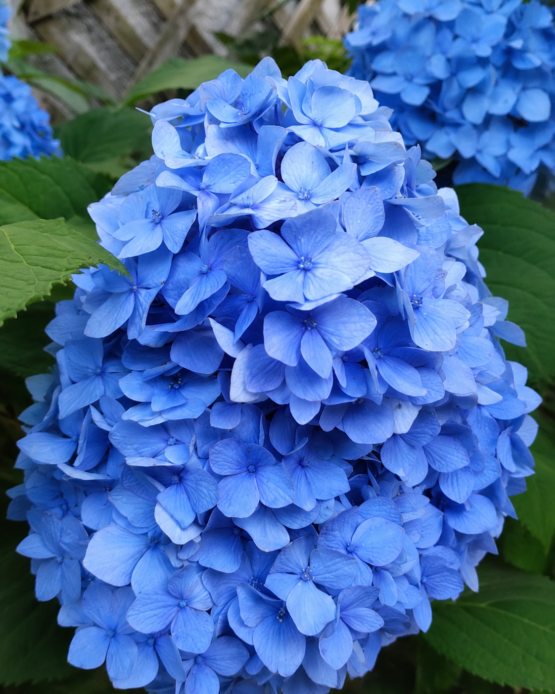
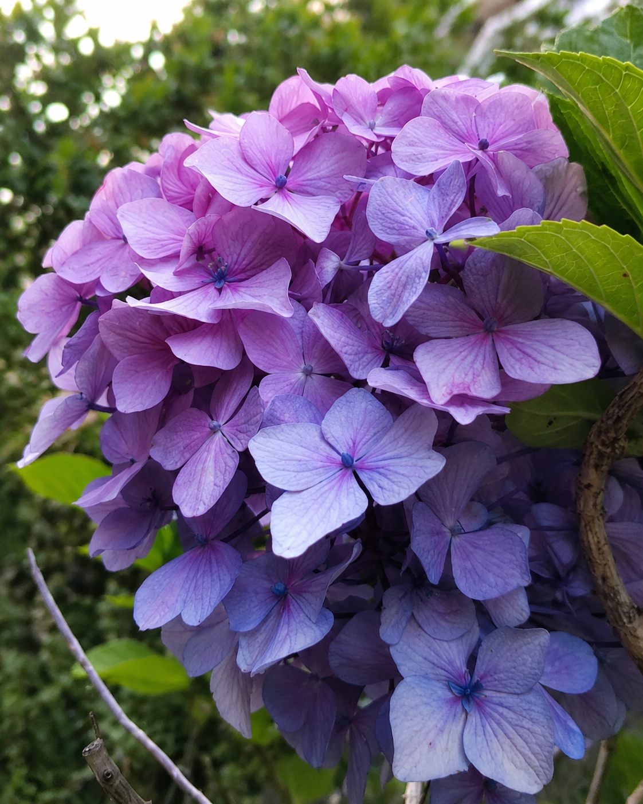
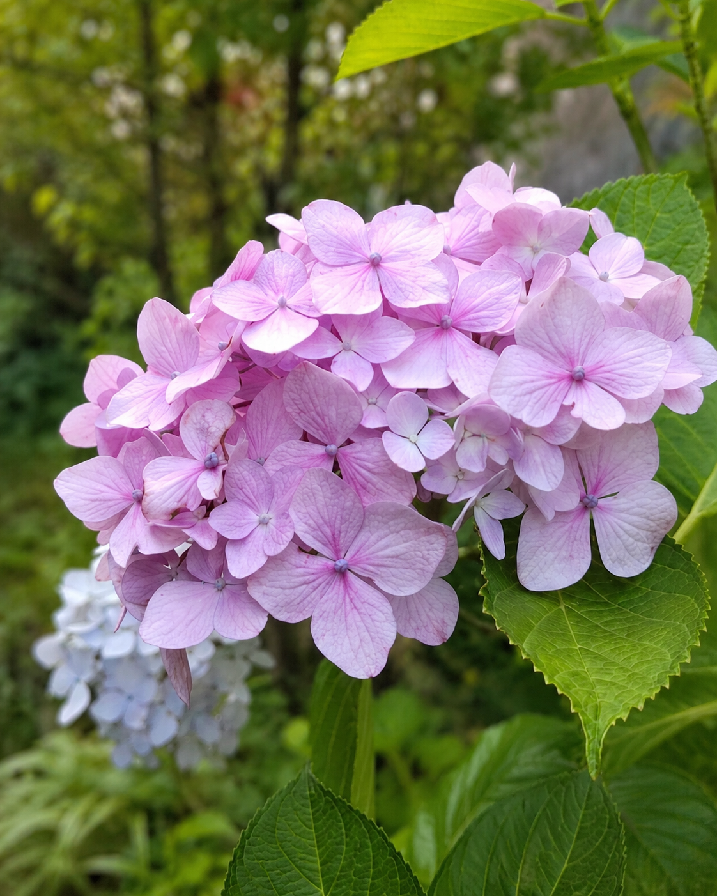

← 小さな扉へ戻る
Back to the Small Door

秋が来たことを
先に知っていたのかもしれない
Maybe it already knew autumn was coming.

木々のあいだから
光がこぼれていた
Light spilled through the trees.
遠くまで
静かな青が続いていた
The quiet blue stretched far away.

やわらかな色は
季節の手紙みたいだった
The soft colors felt like a letter from the season.
見上げるたびに
少しだけ立ち止まる
Every time I looked up, I paused for a moment.
今日という日も
空の下にあった
This day, too, lived beneath the sky.

青い紫陽花
Blue Hydrangea

紫の紫陽花
Lavender Hydrangea

淡いピンクの紫陽花
Pale Pink Hydrangea
ありがとう
Thank you for walking with me.